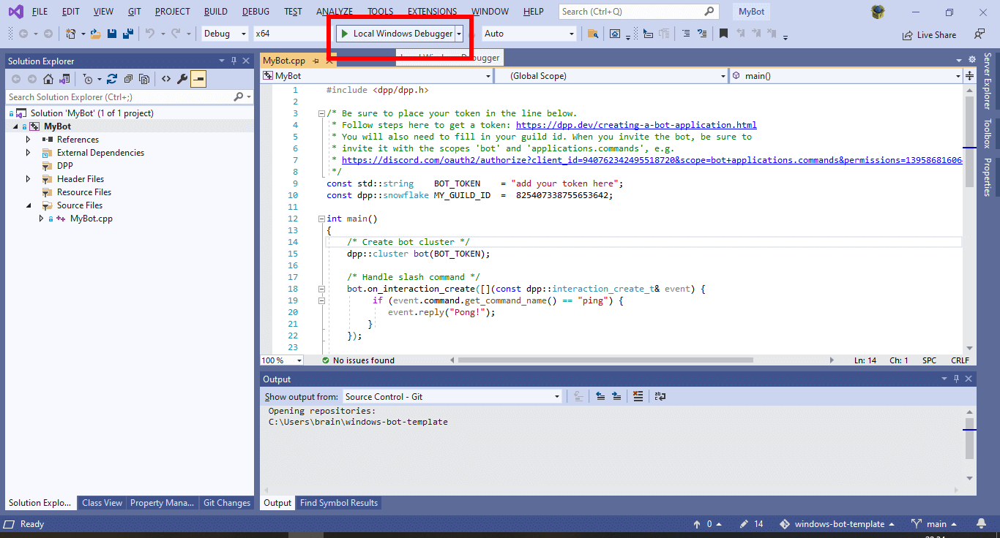

To create a basic bot using Visual Studio 2019, follow the steps below to create a working skeleton project you can build upon. These instructions should work (but are currently untested) on versions of Visual Studio newer than 2019.
- Note
- This tutorial assumes you are using a pre-built copy of the library from a release, or from one of the artifacts on our github page. This is much easier than building it yourself and in most cases you do not need to build your own copy of the library.
- Make sure you have Visual Studio 2019. Community, Professional or Enterprise work fine. These instructions are not for Visual Studio Code. You can download the correct version here.
- Start visual studio and choose to create a new project
- Choose the project type "Console Project" and click next
- Name your bot project. In this example i just chose the name 'MyBot'. You can have any name you like here.

- Open the zip file you downloaded which contains the D++ dlls, include files and lib file. Drag and drop this to your local machine and make note of where you placed it. This location will be important in later steps.
- Back inside visual studio, right click on the project (not solution!) in the tree in your visual studio window. choose 'Properties'.
- The next step is to populate the include directories and library directories sections with the paths to the D++ library and include files. The next steps will guide you through how to do this.
- Click 'edit' when prompted to edit the include paths section. Add the path to the include folder you extracted to your machine, which we took note of earlier. Note that it is important to add the dpp-9.0 folder, not any other folder, to this list:
- Going back to the previous window, now edit the library paths. Again click 'edit' when prompted to edit the library paths section. Add the path to the library folder you extracted to your machine, which we took note of earlier. Note that once more it is important to add the dpp-9.0 folder within it, not any other folder, to this list. Also be aware this is a different folder than the one you just added for includes!
- Double check at this point that all the directories are filled in correctly. They should look generally like the ones in the screenshot below:
- Go to the general section in the same window now, and look for the drop down list laballed "C++ Language Standard". Make sure the selected option is C++17 Standard (/std:c++17)
- Again within the same window, go to the input section, under the linker category, and add 'dpp.lib;' to the start of the libraries to include, as shown below:
- Now you can paste some code into the editor, completely replacing the 'hello world' application that visual studio made for you. The example code here is the basic bot from the first example on this site. You should at this point also double check that the architecture you have selected (in this case x86) matches the version of the dll/lib files you downloaded from the website. This is important as if you mismatch them the compilation will just fail.
- Go to the build menu and choose Build Solution (A handy shortcut for this is to just press F7):
- Observe the build output. There may be warnings, but so long as the build output ends with "1 succeeded" then the process has worked. You may now run your bot!
Troubleshooting
- If you get an error that a dll is missing (e.g.
dpp.dll or opus.dll) when starting your bot, then simply copy all dlls from the bin directory of where you extracted the DPP zip file to, into the same directory where your bot's executable is. You only need to do this once. There should be several of these dll files: dpp.dll, zlib.dll, openssl.dll and libcrypto.dll (or similarly named SSL related files), libsodium.dll and opus.dll.
- Please note that if you change the artchitecture (step 13) you must reconfigure all of steps 7 through 12 again as these configurations are specific to each architecture. This is to allow for different sets of precompiled libs, e.g. for
x86, x64, etc.
- You should run your bot from a command prompt. If you do not, and it exits, you will not be able to see any output as the window will immediately close.
- Stuck? You can find us on the official discord server - ask away! We don't bite!